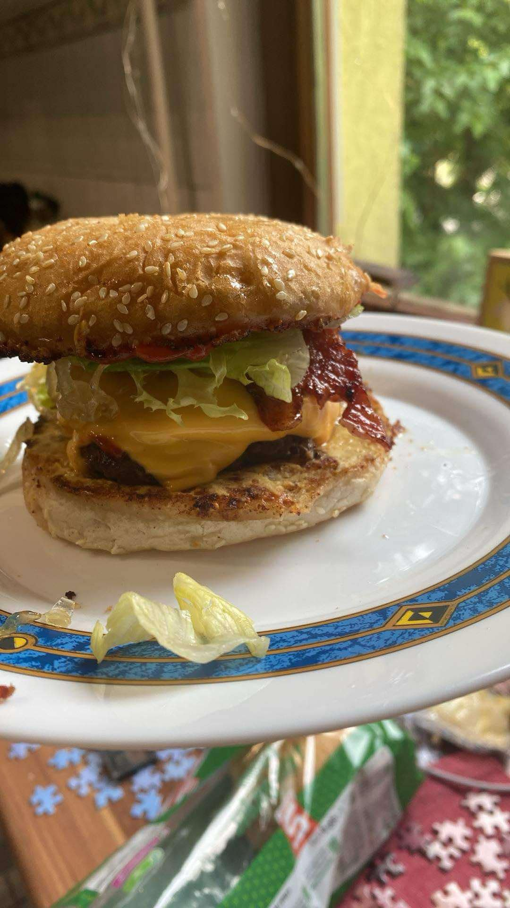
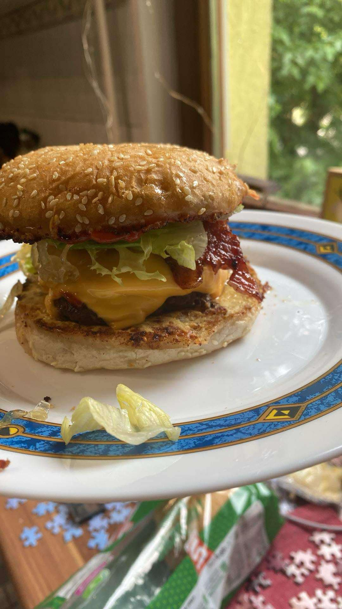
 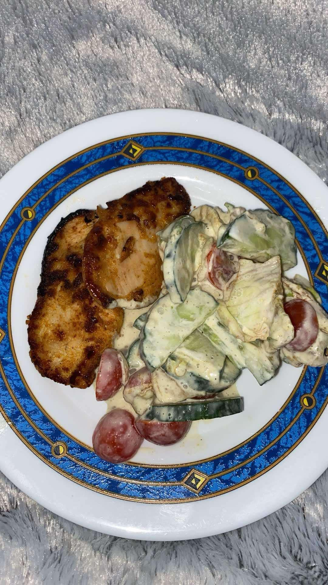
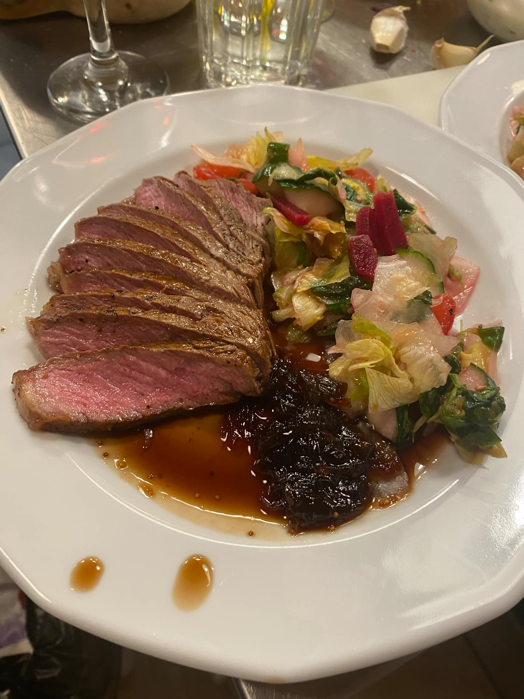
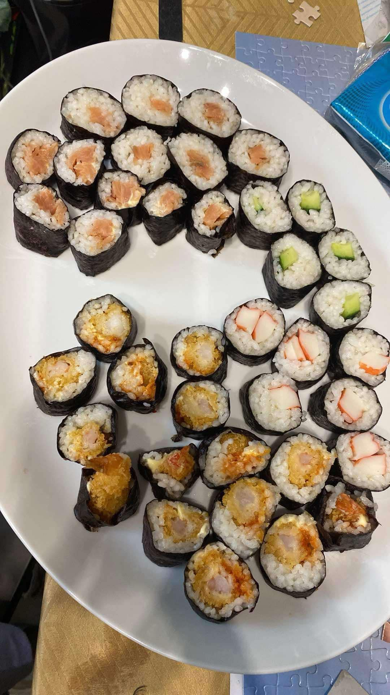
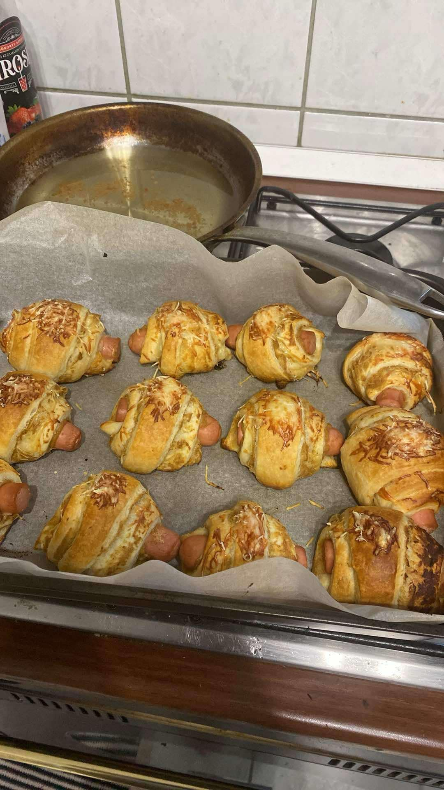
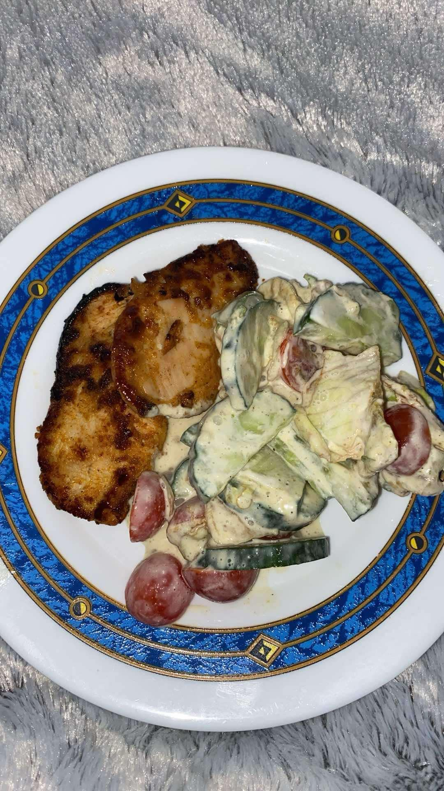
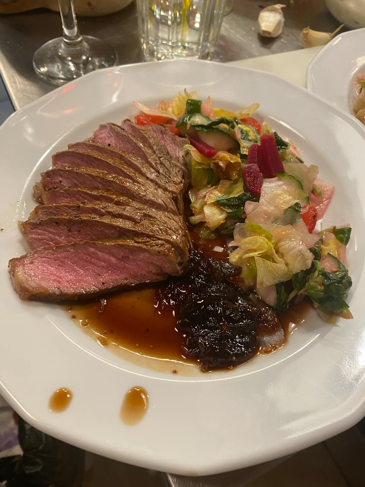
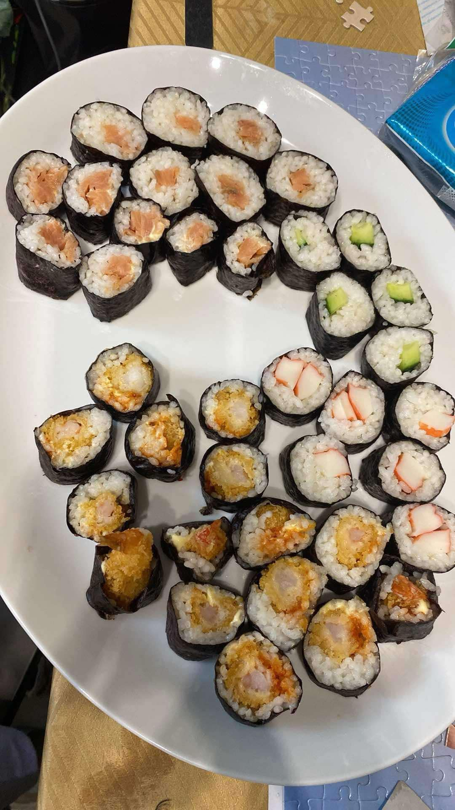
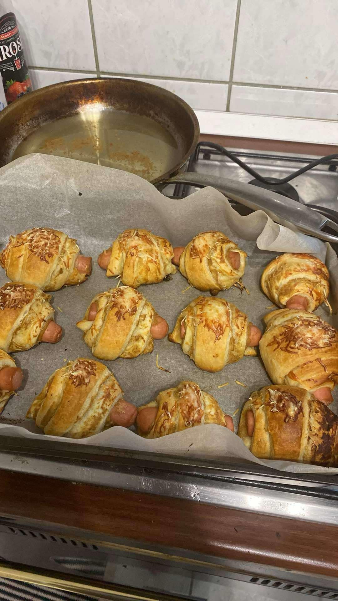
Ponauer Maja
Mindig is szerettem a főzést. Az első pillanattól kezdve lenyűgözött az ételkészítés folyamata,a hozzávalók összeválogatása, az ízek kombinálása és a végeredmény, amikor a frissen készült étel az asztalra kerül. Az, hogy mindezt én készíthetem el, egy igazi alkotói élmény számomra.
Számomra a főzés nem csupán egy háztartási feladat, hanem egy kreatív és szórakoztató tevékenység. A főzésben mindig van valami új felfedezés,legyen szó egy új recept kipróbálásáról, egy különleges fűszer használatáról, vagy arról, hogy hogyan lehet a hétköznapi alapanyagokból valami különlegeset varázsolni.
A főzés lehetőség arra, hogy kifejezzem magam. Egy-egy étel elkészítése során kísérletezhetek az ízekkel, színekkel, formákkal. A kreativitásomnak nincsenek határai. És mivel a főzés mindig személyes élmény, az étel nemcsak táplálék, hanem az érzelmeim, a gondolataim kifejezezése is.
Ráadásul szeretem azt is, hogy a főzés közben megpihenhetek. Az idő, amit a konyhában töltök, egyfajta meditációs pillanat számomra. Az alapanyagokkal való munkálkodás, az ételek lassú elkészítése segít, hogy kizökkenjek a mindennapi rohanásból, és csak a pillanatra összpontosítsak.
A legnagyobb öröm számomra a főzésben talán az, amikor a családom vagy a barátaim körében oszthatom meg az ételt. Nincs is jobb érzés annál, mint amikor látom, hogy az emberek élvezettel fogyasztják el azt, amit készítettem. Egy jól elkészített étel nemcsak testet, hanem lelket is táplál, és ezt az élményt szívesen osztom meg másokkal.
Az étkezések egy közös élménnyé válnak, amelyek során nemcsak finom ételek kerülnek az asztalra, hanem egy-egy jó beszélgetés is kialakul. Az étkezés során megosztott pillanatok, történetek és nevetések még különlegesebbé teszik a főzést számomra.
A főzés tehát nem csupán egy napi feladat, hanem egy igazi szenvedély számomra. Miért szeretek főzni? Mert kreativitást ad, pihenést kínál, és örömet hoz másoknak. És ha egy étel elkészítése során sikerül valami igazán különlegeset alkotnom, az adja meg a legnagyobb elégedettséget számomra.
És bármi is történjen, sosem unom meg! Mindig van egy új recept, amit kipróbálhatok, egy új technika, amit elsajátíthatok. A főzés mindig egy új kalandot jelent, és ezt szeretem benne a legjobban.
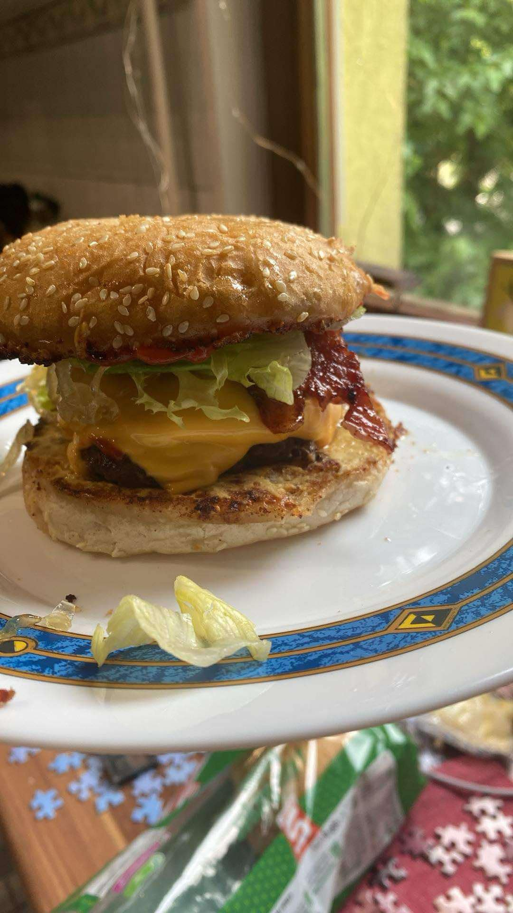
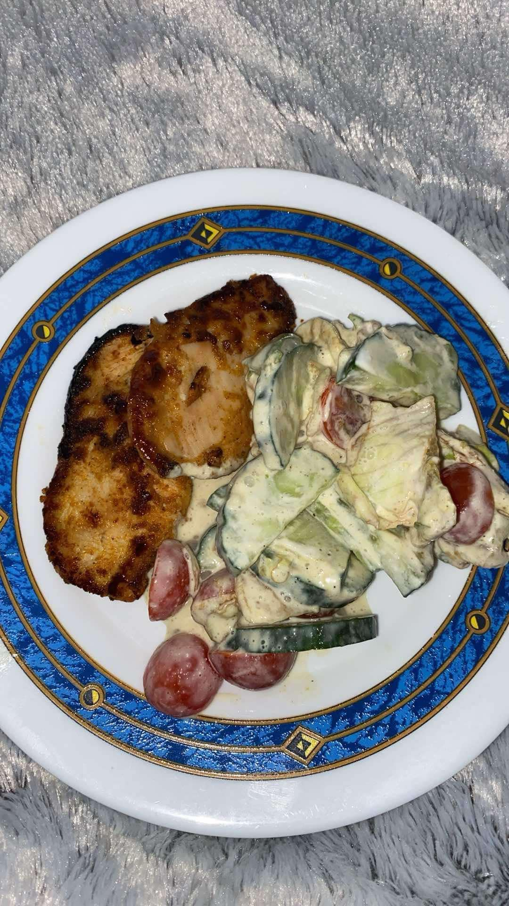
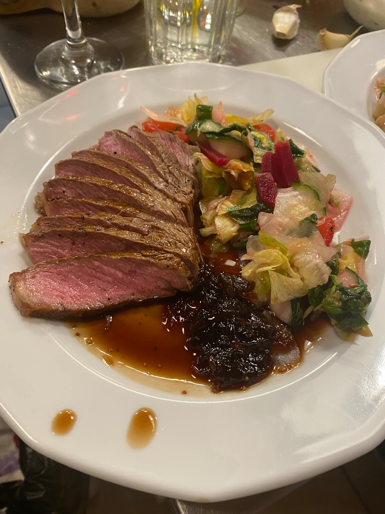
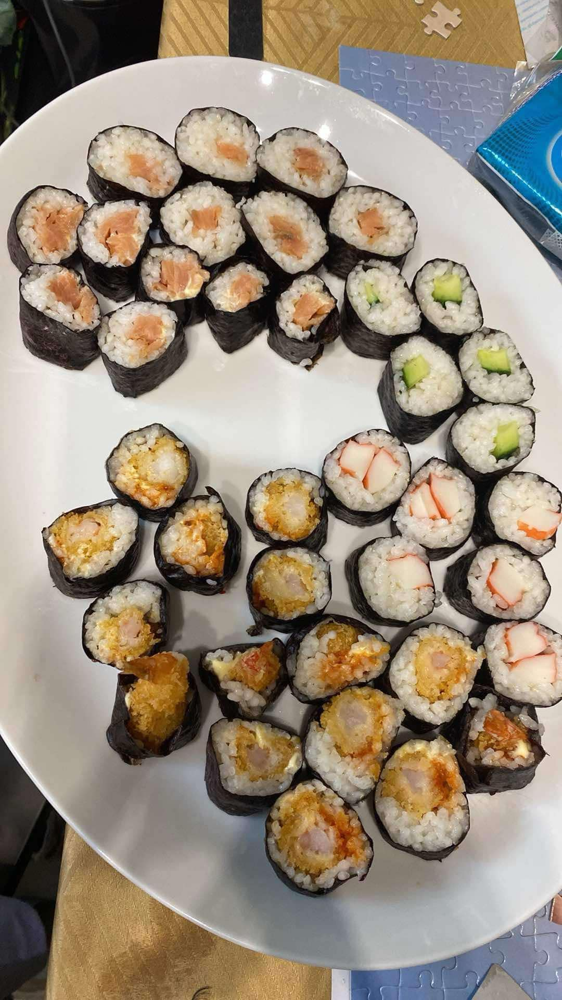
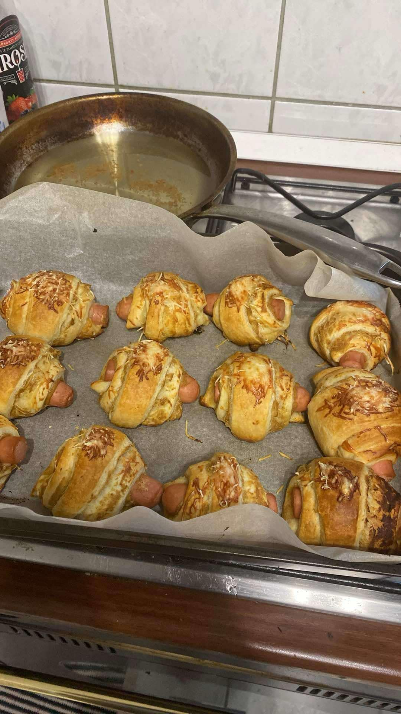